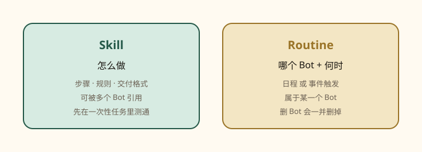
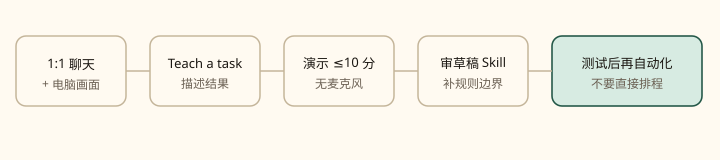

第 07 课
Skill 是怎么做，Routine 是何时做
可靠的一次，才配得上自动化。先测通，再排程。

Skill：可复用的「怎么做」。步骤、决策规则、预期输出、安全边界。Skill 可在多个 Bot 间使用，但 Bot 仍需要相应连接器或登录。Routine：指定哪一个 Bot、何时跑——日程，或在支持时由事件触发。
把刚刚的流程存成 Skill
保存 Skill
把我们刚用的流程存成一个叫 “Weekly account health” 的 Skill。写上源系统、风险定义、输出格式，以及「联系客户必须审批」这条规则。
有用的 Skill 应写明：何时用、必需输入与权限、工作顺序、如何验收、交什么、什么必须审批。用 Settings → Plugins 发现并安装连接器和打包 Skill。桌面 composer 里 / 引用 Skill；@ 点名 Bot、群、Routine、连接器。私有 Skill 按 Bot 启用；/ 里看不到时，到 Settings → Plugins → Yours 为当前 Bot 打开。
Teach a task（若界面提供）

- 打开一对一 Bot 对话，并打开电脑画面。
- 选 Teach a task。
- 描述你即将演示的结果。
- 完整做一遍。
- 停止录制，审 Bot 生成的草稿 Skill。
- 用安全例子测试，再考虑排程。
只记录可见的电脑操作，最多约十分钟，不录麦克风。演示时不要暴露密钥，凭据走安全交接。学来的 Skill 是草稿：补上一次示例看不出来的决策规则、失败处理和审批边界。该能力可能分批开放；若看不到控件，就让 Bot 根据文字说明和刚做完的任务来保存 Skill。以你当前版本界面为准。
创建 Routine：问「拥有它的那个 Bot」
向拥有者 Bot 下达 Routine
每个工作日早上 8:00，对当前账号列表运行 Daily customer-risk Skill。在本对话发布一份带链接的观察名单。不要联系客户。若源数据不可用，报告失败，不要用旧数据凑数。
创建前确认这六项：拥有者 Bot、日程 + 时区、输入来源、预期结果、审批边界、缺数据时怎么办。Bot 建好后会显示下次运行。笔记本合上，后台 Routine 仍可跑。时区在 Settings → General → Agent → timezone，Routine 用这个时区。
事件触发
Cursor 账号集成可以从事件启动 Routine，例如一条 Slack 消息或 GitHub 通知。它们和 Slack / GitHub 的 Plugins 连接器是分开的，可能要走自己的连接流程。规则写窄，回应写清。不要监听「每一条新消息」：又吵又耗用量，还容易对不相干输入动手。
窄事件，而不是「每一条」
当 #customer-escalations 里的消息同时包含支持工单链接和短语 “needs repro” 时：打开工单，在 staging 复现，并在本对话发布一份复现包。未经审批，绝不回帖到 Slack。
先 Test run
Test run 是真干活
测试会导航网站、改文件、调用已连接工具。用安全输入，写操作继续放在审批后面。
检查：是否选了当前输入；输出格式对不对；每个动作有没有来源或审计痕迹；有没有在预定审批点停下；失败是否写得明白。
管理 Routines
打开 Bot → View conversation details → Routines，可：启用或暂停、测试运行、改日程或说明、查看最近成败、删除。一个 Bot 最多 50 条 Routine；每条保留最近 20 次运行记录。删除立即生效、不能撤销。删除 Bot 会删掉它拥有的 Routines。长时间离开后，Grok Bot 可能问你是否继续跑 Routine，不答就暂停；回来后检查被暂停的那些。
设计原则：先自动化准备，再自动化执行；先起草、对账、建议；发送 / 购买 / 删除 / 发布 / 改生产必须审批；写无数据和过期数据政策；重试尽量幂等；告诉它部分完成时汇报到哪里；网站、连接器或源格式一变就重测。